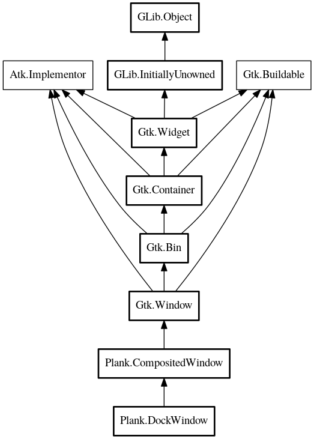

DockWindow
Object Hierarchy:

Description:
public class DockWindow :
CompositedWindow
The main window for all docks.
Content:
Properties:
Creation methods:
Methods:
Inherited Members:
All known members inherited from class Plank.CompositedWindow
All known members inherited from class Gtk.Window
All known members inherited from class Gtk.Bin
All known members inherited from class Gtk.Container
- border_width
- child
- resize_mode
- class_find_child_property
- class_list_child_properties
- handle_border_width
- install_child_properties
- install_child_property
- add_with_properties
- child_get
- child_get_property
- child_get_valist
- child_notify
- child_notify_by_pspec
- child_set
- child_set_property
- child_set_valist
- child_type
- composite_name
- forall
- forall_internal
- @foreach
- get_border_width
- get_child_property
- get_children
- get_focus_chain
- get_focus_child
- get_focus_hadjustment
- get_focus_vadjustment
- get_path_for_child
- get_resize_mode
- propagate_draw
- resize_children
- set_border_width
- set_child_property
- set_focus_chain
- set_focus_hadjustment
- set_focus_vadjustment
- set_reallocate_redraws
- set_resize_mode
- unset_focus_chain
- add
- check_resize
- remove
- set_focus_child
All known members inherited from class Gtk.Widget
All known members inherited from class GLib.Object
- @new
- new_valist
- newv
- add_toggle_ref
- add_weak_pointer
- bind_property
- connect
- constructed
- disconnect
- dispose
- dup_data
- dup_qdata
- freeze_notify
- @get
- get_class
- get_data
- get_property
- get_qdata
- get_type
- notify_property
- @ref
- ref_sink
- replace_data
- replace_qdata
- remove_toggle_ref
- remove_weak_pointer
- @set
- set_data
- set_data_full
- set_property
- set_qdata
- set_qdata_full
- steal_data
- steal_qdata
- thaw_notify
- unref
- watch_closure
- weak_ref
- weak_unref
- notify
- ref_count
All known members inherited from interface Atk.Implementor
All known members inherited from interface Gtk.Buildable
- add_child
- construct_child
- custom_finished
- custom_tag_end
- custom_tag_start
- get_internal_child
- get_name
- parser_finished
- set_buildable_property
- set_name